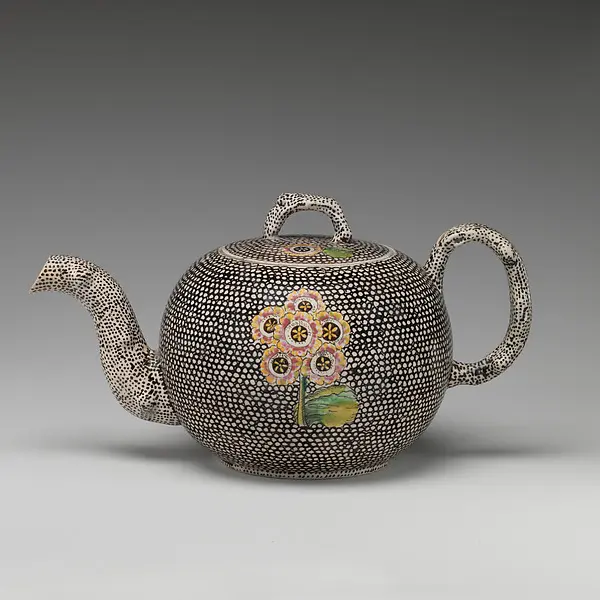
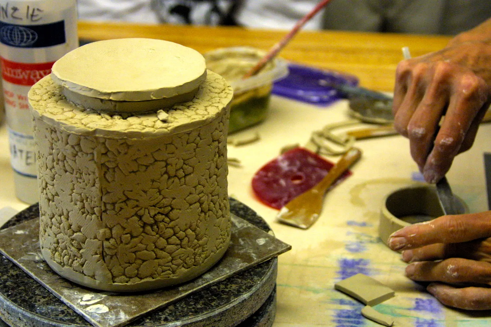
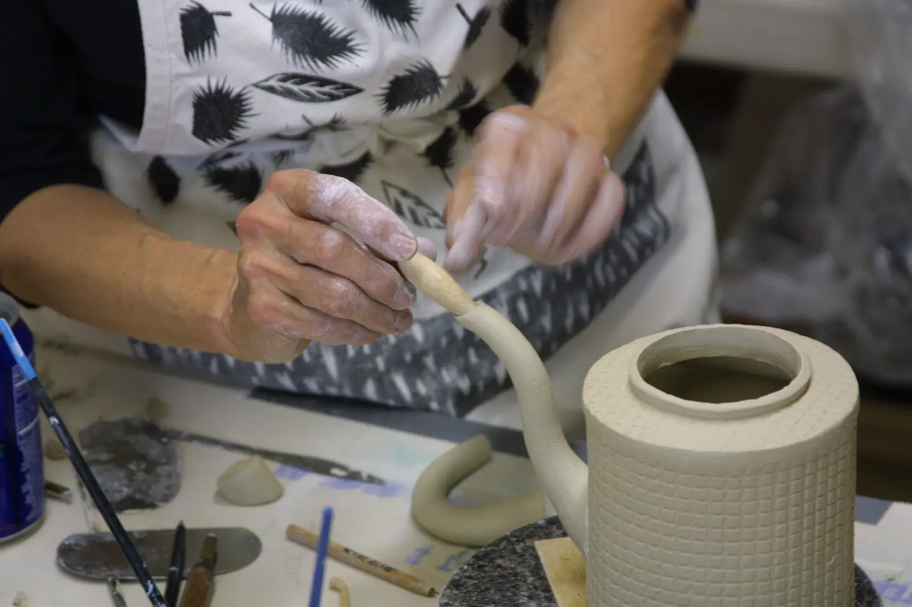
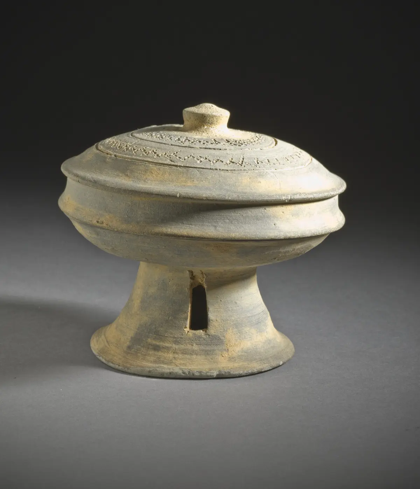
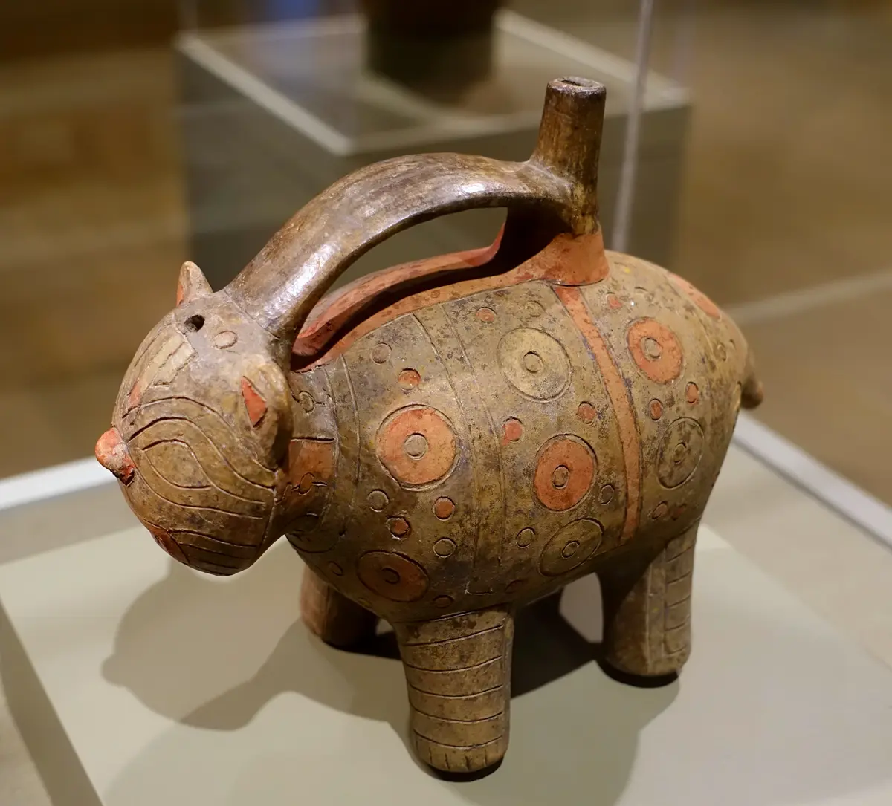
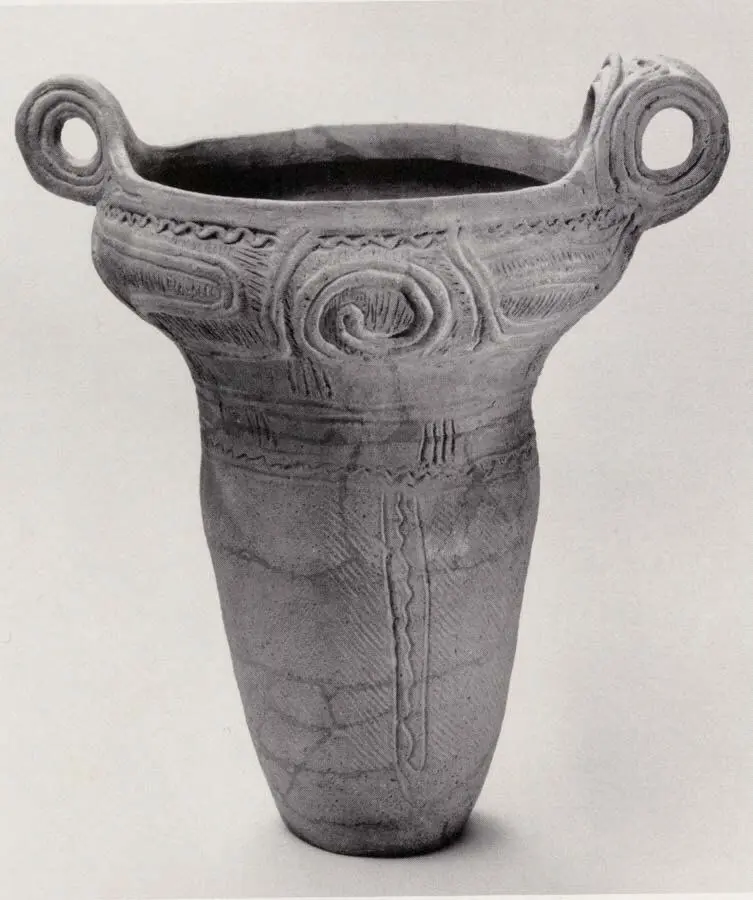

Prerequisite
Secure joins, moisture matching, controlled profiles, and basic shrinkage awareness.
Phase 05 · 9–12 hours
A handle is not decoration added to a cup. A lid, foot, spout, and body form one system of forces, clearances, movement, and use.

Aim
Secure joins, moisture matching, controlled profiles, and basic shrinkage awareness.
You can prototype interfaces, fit a lid, balance a handle, tune a spout, and evaluate comfort, stability, pouring, and cleaning.
Paper mockups, handle trials, a lid-fit matrix, a pour-system study, and one 0.6–1 L pouring vessel.
What changes when a beautiful object must be lifted, tilted, cleaned, and returned to a table?
Clearance, section, attachment points, and center of mass determine grip and wrist load.
Clearance must accommodate clay shrinkage, glaze thickness, firing movement, and removal.
Contact area, flatness, weight distribution, and edge finish govern wobble and handling.

A lid needs a place to sit, enough overlap or flange to resist sliding, and a knob or edge the hand can use. It must still move after drying, glazing, and firing.
Teapot process photo by Quinn Dombrowski, CC BY 2.0. Source
Make six small jars and three lid systems: drop-in flange, cap, and inset. For each, make a close and generous clearance.
No universal clearance guarantees fit. Your matrix creates evidence for your exact clay–glaze–forming–firing system. Follow the studio’s lid-firing method; unless a tested method specifies otherwise, keep ordinary glaze off mating surfaces, allow for glaze run and kiln movement, and never force a stuck fired lid. Test expendable matched samples before the final vessel.

The inlet admits liquid, the spout accelerates and guides it, the lip separates the stream. Handle position controls the tilt through that whole path.
Glugging often signals restricted air entry or competing flow. Lid fit, venting, fill level, inlet size, and tilt angle interact; change one variable at a time.
Inspiration · look comparatively
Ask what each component does mechanically—and what it changes visually or socially.



Knowledge check · 3 questions
Choose one answer for each situation. Open a hint when needed; explanations appear after you check all three.
Phase checkpoint · 30 points
| Area | 0–2 | 3–4 | 5–6 |
|---|---|---|---|
| Handle/use | Unsafe or uncomfortable | Usable with minor issue | Comfort, leverage and form align |
| Lid/access | Fails fit or access | Retains and removes | Tolerance remains robust in use |
| Pour | Uncontrolled | Consistent with some drip | Clean stream across fill levels |
| Stability/cleaning | Wobbles or traps residue | Stable and reachable | Use cycle is fully considered |
| Evidence/redesign | Claims without test | Documents tests | Prioritizes revision causally |
.jpg){kind=link}
.jpg){kind=link}
{kind=link}
{kind=link}
{kind=link}